Data publicării: 20.02.2020
Autor articol: Anca Ignat
Sub denumirea OCR, prescurtarea de la Optical Character Recognition, se află de obicei un software care preia o imagine care conține text, printat sau scris de mână și o prelucrează cu scopul de a obține varianta digitizată a textului.
Această problemă s-a constituit întruna din primele teme de cercetare în domeniul prelucrării de imagini [1]-[6]. Tehnicile de OCR au fost folosite la început pentru sortarea corespondenței, analiza cecurilor bancare, recunoașterea semnăturilor sau digitizarea documentelor primite prin fax. Odată cu creșterea numărului de documente care sunt folosite de companii, domeniul OCR a devenit unul de mare importanță. Analiza facturilor, validarea documentelor de identitate, recunoașterea automată a plăcuțelor de înmatriculare, asistarea persoanelor cu dizabilități vizuale sunt numai câteva din situațiile care necesită folosirea tehnicilor de OCR.
Metodele OCR pot fi de două tipuri: cele orientate spre recunoașterea caracterelor tipărite şi cele pentru recunoașterea caracterelor scrise de mână. Procesul OCR cuprinde mai multe etape:
- Achiziția imaginii: fotocopiere, fotografiere, …
- Preprocesarea: pentru îmbunătăţirea calităţii imaginii şi în consecinţă şi a rezultatului recunoaşterii textului, se aplică tehnici de reducere/eliminare a zgomotului, tehnici de prag şi de extragere a rândurilor scrise;
- Segmentarea caracterelor: această etapă se referă la separarea caracterelor pentru a putea fi transmise procedurii de identificare/recunoaştere. Tehnicile folosite sunt de analiză a componentelor conexe şi profile de proiecţie. Probleme în procesul de segmentare apar atunci când regiunea de demarcaţie între două caractere alăturate nu este clar definită sau lipsesc informaţii/porţiuni din literă;
- Extragerea caracteristicilor esenţiale: caracterele recunoscute în etapa precedentă sunt analizate şi este extrasă informaţia esenţializată care duce la uşurarea procesului automat de recunoaştere. Aceste trăsături esenţializate trebuie să minimizeze variaţiile caracterelor care reprezintă acelaşi simbol şi să maximizeze varianţa trăsăturilor corespunzătoare caracterelor diferite.
- Clasificarea caracterelor: folosind trăsăturile extrase la pasul precedent, cu ajutorul tehnicilor de clasificare se deduce clasa de simboluri din care face parte simbolul analizat;
- Post-procesare: îmbunatăţirea rezultatelor obţinute, folosind informaţii legate de limba în care e scris textul, spre exemplu.
În conformitate cu cei de la ‚techigem’ [5] programele OCR cele mai bune sunt: ABBYY FineReader, OmniPage, Soda PDF, ReadIRIS, Adobe Acrobat DC, Boxoft Free OCR, PDF element 6 Pro, OnlineOCR.net, GImageReader, Microsoft OneNote. Cele mai bune software-uri gratis sunt Microsoft OneNote, SimpleOCR, Photo Scan, (a9t9) Free OCR, Capture2Text, Easy Screen OCR, OCR with Google Docs [4].
Una din cele mai folosite biblioteci de OCR este Tesseract. Tesseract-ul este un software open-source, dezvoltat inițial de cei de la Hewlett-Packard între anii 1984-1994. Din 2006 este susținut de cei de la Google. Tesseract-ul presupune că are la intrare o imagine binară, opțional cu zone poligonale marcate ca fiind zone de căutare a textului. Primul pas constă dintr-o analiză a componentelor conexe, stocându-se conturul acestor regiuni. Modul cum aceste contururi se intersectează, se suprapun sau sunt incluse unele in altele ajută la determinarea liniilor text. Liniile text sunt apoi împărțite în cuvinte. Înainte de a aplica tehnici de recunoaștere a caracterelor are loc o încercare de recunoaștere a cuvintelor. Îmbunătățirea recunoașterii textului se face apoi prin procesarea şi identificare caracterelor individuale.
Funcția MATLAB de recunoaștere a textului se bazează pe Tesseract şi are următoarea sintaxă:
txt=ocr(I) sau txt=ocr(I, roi) sau txt=ocr(I, lista variabila de parametri).
Această funcție returnează un obiect de tip ocrTet care conține informațiile legate de recunoașterea optică a caracterelor precum textul recunoscut, localizarea lui şi o măsură a gradului de încredere a rezultatului recunoașterii:
txt.Text – conține textul recunoscut (cu spații şi newline)
txt.CharacterBoundingBox – este o matrice Mx4; liniile matricei au semnificația [x, y, width, height], (x,y) fiind poziţia colţului din stânga sus iar width şi height sunt dimensiunile dreptunghiului care încadrează caracterul.
txt.CharacterConfidence – valorile de încredere (probabilitățile) a recunoașterii caracterului sunt în intervalul [0,1]
txt.Words – memorează cuvintele recunoscute
txt.WordBoundingBox – este o matrice Mx4; liniile matricei au semnificaţia [x, y, width, height], (x,y) fiind poziția colțului din stânga sus iar width şi height sunt dimensiunile dreptunghiului care încadrează cuvântul.
txt.WordConfidence – valorile de încredere (probabilitățile) a recunoașterii cuvintelor
Sfaturi pentru îmbunătățirea rezultatelor OCR (documentația MATLAB)
- Mărește de 2 până la 4 ori imaginea analizată
- Dacă simbolurile sunt prea apropiate sau marginile se ating, se recomandă folosirea operațiilor morfologice de subțiere
- Problemele de iluminare neuniformă a imaginii cu text se pot rezolva prin binarizarea imaginii
- Selectarea manuală a regiunii de interes
- Dacă textul este parte a unei imagini care conține şi alte elemente vizuale (de exemplu, scenele stradale) se recomandă întâi localizarea cuvintelor şi/sau a blocurilor potențiale cu conținut textual și abia apoi se aplică OCR-ul.
Vom prezenta în continuare rezultatul aplicării tehnicilor OCR realizate de Adobe Acrobat, Matlab, SimpleOCR şi de Photo Scan pentru imagini rotite cu unghiuri cuprinse între 2⁰ – 20⁰ sau după aplicarea unei torsiuni. Am observat că s-a încercat luarea în considerație a situațiilor imaginilor rotite cu unghiuri mici au fost, dar cele legate de torsiune au ridicat probleme în identificarea textului.
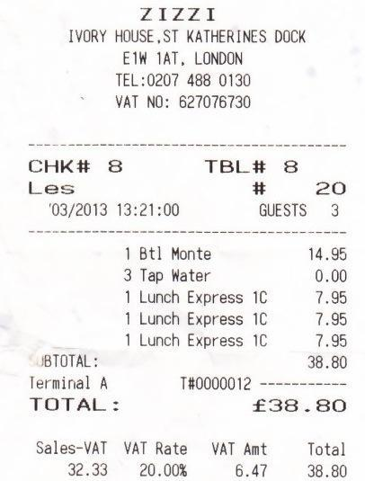
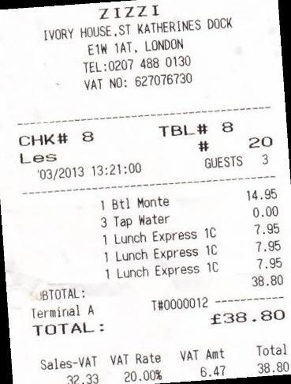
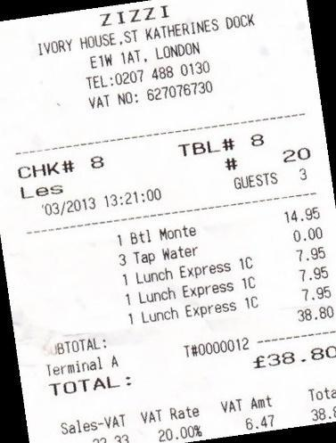
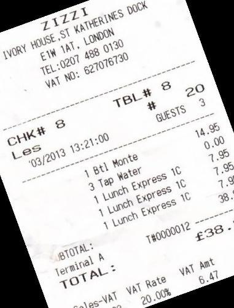
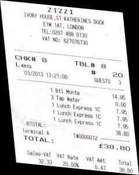
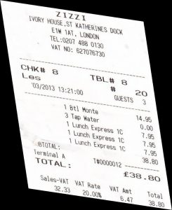
Rezultate OCR aplicat pe imaginea originală
Adobe Acrobat
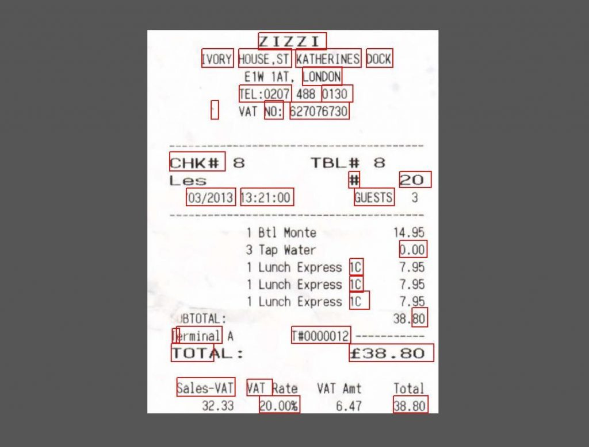
Matlab
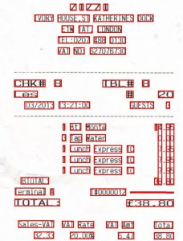
| SimpleOCR | Photo Scan |
|
I I I I I IVOFY H0UsE,sT Katherine 2024 Eli 1lT. London TEL:0207 488 0120 ‘ VAT N0: 627076730 cake 8 able 8 Lea # 20 ’03/2012 13:21*.00 GUESTS 3 1 Sol Dante 3 Tap bater 1 Lunch Express 12 1 Lunch Express 12 1 Lunch Express IC 14.95 0.00 7.05 7.95 7.95 38.80 IBTOTAL: terminal A TOTAL: T|0009012 ———-|38.80 Sales-vAT 32.23 VAT Rate 20.00% VAI act 6.47 Total 38.80 |
CHK# 8 Terminal A TOTAL : Sales-VAT 32.33 ZIZZI IVORY HOUSE ST KATHERINES DOCK EIW IAT, LONDON TEL:0207 488 0130 VAT NO: 627076730 ’03/2013 13:21 14.95 0.00 38.80 f38 . 80 TBL# 8 GUESTS Btl Monte Tap Water 1 3 1 1 1 Lunch Express IC Lunch Express IC Lunch Express IC T#0000012 ———– 20 3 7.95 7.95 7.95 VAT Rate 20.00% VAT Amt 6.47 Total 38.80 |
Rezultate imagini rotite cu 8⁰
Adobe Acrobat Matlab
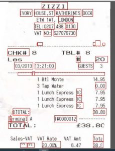
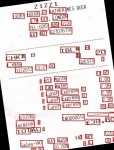
| SimpleOCR | Photo Scan |
|
Z 1 Z Z |1. |AII|F.R|NES dock ivory HOUSE .S1 fax its w London E’L :02|17 186$ 0130 J 1 N0: 627076730 $6 cake 8 let .03/0013 13:21:00 tell it 8 GUESTS 20 Sol Dante 3 Tap bater 1 Lunch Express IC 1 Lunch express 12 1 Lunch express up 14,9| 0.00 -web 7.95 7.95 38.80 ‘E51′(r1)L : l etc Nina l 4 TOTAL; 1|0002012 ———-|38.80 Saies-klT RJ.3a act 10ta1 eat rite |41 b 17 38.|0 20.00% ‘ 1 z z 1 a Y buses * so abbe .f got , jj bier onto (.1| IV . %% 0132 t :9201 4 IE. ykj-l’tjlj %0: 6212 job cake beet’s ’03/2013 1 3 : 2 1 : () 0 > 9 TEST- go 4| is 3 goes cone 1 8t1 3 lap bater 1 Lunch Express 1g 1 Lunch Express 1C 1 Lunch Express 1| miss 0.00 7.9| 7.95 7.95 38.80 k ‘BIOTAL : I et’ ln j r’a 1 A TOTAL: salesman! en A Qt’j kHz (J(j(;()12 c 5 4| s . s |3 hi la ti A 41 Apt Rate 3| .i is .11 22 .00% |
Z 1 Z Z |1. |AII|F.R|NES dock ivory HOUSE .S1 fax its w London E’L :02|17 186$ 0130 J 1 N0: 627076730 $6 cake 8 let .03/0013 13:21:00 tell it 8 GUESTS 20 Sol Dante 3 Tap bater 1 Lunch Express IC 1 Lunch express 12 1 Lunch express up 14,9| 0.00 -web 7.95 7.95 38.80 ‘E51′(r1)L : l etc Nina l 4 TOTAL; 1|0002012 ———-|38.80 Saies-klT RJ.3a act 10ta1 eat rite |41 b 17 38.|0 20.00% ‘ 1 z z 1 a Y buses * so abbe .f got , jj bier onto (.1| IV . %% 0132 t :9201 4 IE. ykj-l’tjlj %0: 6212 job cake beet’s ’03/2013 1 3 : 2 1 : () 0 > 9 TEST- go 4| is 3 goes cone 1 8t1 3 lap bater 1 Lunch Express 1g 1 Lunch Express 1C 1 Lunch Express 1| miss 0.00 7.9| 7.95 7.95 38.80 k ‘BIOTAL : I et’ ln j r’a 1 A TOTAL: salesman! en A Qt’j kHz (J(j(;()12 c 5 4| s . s |3 hi la ti A 41 Apt Rate 3| .i is .11 22 .00% |
Rezultate imagini rotite cu 10⁰
Adobe Acrobat Matlab
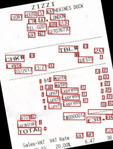
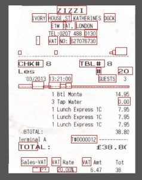
| SimpleOCR | Photo Scan |
|
. 4. zz 1. .|,4 Z. (acts set job mist . Ill we’d r of to: hh . Is $%8, Qh t.:$-)2U1 x 7|- ygg *: %1 j 4,1 cell U-et’v 3:23 :00 ‘ 3/2013 1 is > 6 cab:- go > 3 gives k ‘BTIII’AL : ( el’ m i rte l A TOTAL. : -:4.5 Sales of hi |1 all cone 3 lap bater 1 Lunch Cypress IC 1 Lunch express 1C 1 Lunch Express 1| 14.95 0.00 7.95 7.95 7.95 38.80 ||0000012 f 38 . if lot a U I’ll rate -1 35 to . A 22 .02% |
CHK# 8 Les ’03/2013 13:21 ZIZZI IVORY HOUSE .ST KATHERINES DOCK EIW LONDON TEL:0207 488 0130 VAT NO: 627076730 14.95 38.8 TBL# 8 GUESTS 1 3 1 1 1 Btl Monte Tap Water Lunch Express IC Lunch Express IC Lunch Express IC T#0000012 20 3 0.00 7.95 7.95 7.95 ‘BTOTAL: Terminal A TOTAL : Sales-VAT VAT Rate 20.00% f3B.8 VAT Amt 6.47 38 |
Rezultate OCR torsiune – factor torsiune 0.5
Matlab – nu a identificat nimic
Adobe Acrobat
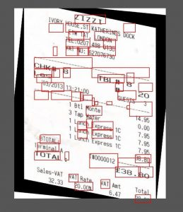
| SimpleOCR | Photo Scan |
|
I I I I I IVOFY H0UsE,sT Katherine 2024 Eli 1lT. London TEL:0207 488 0120 ‘ VAT N0: 627076730 cake 8 able 8 Lea # 20 ’03/2012 13:21*.00 GUESTS 3 1 Sol Dante 3 Tap bater 1 Lunch Express 12 1 Lunch Express 12 1 Lunch Express IC 14.95 0.00 7.05 7.95 7.95 38.80 IBTOTAL: terminal A TOTAL: T|0009012 ———-|38.80 Sales-vAT 32.23 VAT Rate 20.00% VAI act 6.47 Total 38.80 |
z i zzx HOUSESI LONDON 488 627076730 CHK# 8 Les ’03/2013 Monte 3 lap iAater Eunch Express IC Lunch Express IC Eunch Express IC 20 14.9% 0.00 7.96 7 .96 38.80 .80 I ermina\ TOT AL Sales-NXT 32.33 Rate NM 20.00% 6.41 iotal 38.8( |
Referințe bibliografice
- Islam, N., Islam, Z., & Noor, N. (2017). A survey on optical character recognition system. arXiv preprint arXiv:1710.05703.
- Smith, R. (2007, September). An overview of the Tesseract OCR engine. In Ninth International Conference on Document Analysis and Recognition (ICDAR 2007) (Vol. 2, pp. 629-633). IEEE.
- Al-Shabi, M. A. M. (2006). Text detection and character recognition using fuzzy image processing. Journal of electrical engineering, 57(5), 258-267.
- Saikat Basu, 7 Best Free OCR Software Apps to Convert Images Into Text http://www.makeuseof.com/tag/top-5-free-ocr-software-tools-to-convert-your-images-into-text-nb/
- David Nield, Jonas DeMuro, Brian Turner, Best OCR software of 2020: scan and archive your documents to PDF, http://www.techradar.com/best/best-ocr-software
- Chaudhuri, A., Mandaviya, K., Badelia, P., & Ghosh, S. K. (2017). Optical character recognition systems. In Optical Character Recognition, Systems for Different Languages with Soft Computing (pp. 9-41). Springer, Cham.